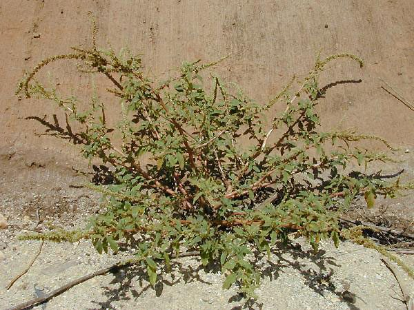

कांटे वाली चौलाईSpiny Amaranth
Amaranthus spinosus · Amaranthaceae · FLR-0074

- Scientific name
- Amaranthus spinosus L.
- Family
- Amaranthaceae
- Hindi
- कांटे वाली चौलाई
- Status here
- naturalized
- IUCN
- not evaluated
When to look कब देखें
Expected mainly in May, June, July, August, September, October, November.
कांटे वाली चौलाई / Spiny Amaranth
Amaranthus spinosus L. — Amaranthaceae
कांटे वाली चौलाई (कांटा खूटना / जंगली चौलाई / स्पाइनी पिगवीड) — पूर्वी उत्तर प्रदेश में खेतों की मेड़ों, रास्तों, सड़कों के किनारों और विशेष रूप से पशुओं के बाड़ों के पास की उपजाऊ परती ज़मीन (disturbed soils near cattle yards) पर उगने वाला एक मध्यम आकार का, शाकीय खरपतवार है। यह मूल रूप से उष्णकटिबंधीय अमेरिका का निवासी है, लेकिन भारत में पूरी तरह से अभ्यस्त (naturalized) हो चुका है। इसकी सबसे बड़ी और मुख्य पहचान इसकी पत्तियों के आधार पर पाए जाने वाले कठोर और तीखे कांटे (sharp spines in leaf axils) हैं, जो इसे सामान्य खाने वाली चौलाई (chaulai) से अलग करते हैं। ये कांटे इसे चरने वाले जानवरों (जैसे गाय-भैंस) से बचाते हैं। हालांकि इसके पत्तों और बीजों को कोमल अवस्था में (कांटे कड़े होने से पहले) कुछ समुदायों द्वारा उबालकर साग के रूप में खाया जाता है, लेकिन इसके कड़े कांटों के कारण खेतों में काम करने वाले किसानों को इसे उखाड़ने में बहुत सावधानी रखनी पड़ती है।
Quick Identification त्वरित पहचान
| Feature | Description |
|---|---|
| Plant habit | Erect, heavily branched, annual or short-lived perennial herb growing up to 30–100 cm high, with a green or reddish-purple stem |
| Spines | A pair of sharp, stiff, needle-like greyish-white spines (5–15 mm) situated in the axils of each leaf |
| Leaves | Alternately arranged, simple, ovate-lanceolate, smooth, green, with a dull whitish chevron mark sometimes present on the upper surface |
| Flowers | Tiny, greenish-yellow, arranged in long, cylindrical terminal spikes and small globular clusters in the leaf axils |
| Seeds | Tiny (0.8–1 mm), lens-shaped, glossy, dark brown to jet-black, produced in massive quantities |
Field tip: Look near cattle sheds or dump yards in July. Search for branched, leafy weeds with green or reddish stems. Inspect the point where the leaf stem meets the main stem; you will find a pair of sharp, white, needle-like spines. Do not touch them bare-handed as they easily pierce the skin.
Morphology आकारिकी
Biometrics (typical measurements of mature plants in the northern Indian plains):
| Measurement | Range |
|---|---|
| Plant height | 30–100 cm |
| Spine length | 5–15 mm |
| Leaf length | 3.0–8.0 cm |
| Flower spike length | 5–15 cm |
| Seed diameter | 0.8–1.0 mm |
| Weight of 1000 seeds | 0.3–0.5 g |
Stem and Branches: The stem is stout, cylindrical, smooth, and green, turning reddish or purple near the base, heavily branched.
Foliage: Simple, alternate leaves. Leaf margins are entire, with a small bristle-like tip (mucronate) at the apex. The leaf stems (petioles) are almost as long as the leaf blade.
Flowers: Unisexual. The male flowers are grouped at the top of the terminal spikes, while the female flowers are clustered lower down in the axils of the leaves, surrounded by sharp bracts.
Seeds: Packed inside tiny capsules (utricles) that split open horizontally when dry, releasing the smooth, polished black seeds.
Associated Species / Interactions संबंधित प्रजातियाँ
- Defense adaptation: The sharp axillary spines act as a defense mechanism against large herbivores like nilgai, goats, and cattle, which avoid feeding on mature plants.
- Larval Host: Host to the caterpillars of the Beet Armyworm (Spodoptera exigua) and leaf-roller caterpillars.
- Pollinators: Wind-pollinated, though small hoverflies and beetles sometimes feed on the pollen.
Pests and Diseases कीट और रोग
- Stem Weevil: Hypolixus haereticus grubs bore into the stems, causing swellings (galls) and weakening the plant.
- White Rust: Caused by the oomycete Albugo bliti, producing white, chalky pustules on the undersides of the leaves.
- Leaf Spot: Caused by Cercospora species during monsoon rain, creating brown spots on leaves.
Traditional and Ethnobotanical Use पारंपरिक और नृवंशवनस्पति उपयोग
- Famine Green Vegetable: The young, tender shoots and leaves of young plants are collected in early monsoon before the sharp spines harden, boiled thoroughly to soften, and cooked as a green leafy vegetable (chaulai saag).
- Ayurvedic Antidote Paste: The fresh root is ground with water on a stone plate, and the paste is applied topically over scorpion stings and wasp bites to reduce pain and swelling.
- Internal Haemorrhage Remedy: The roots are boiled in water to prepare a traditional decoction, consumed in Ayurvedic practices to treat internal bleeding, dysentery, and excessive menstrual flow.
- Cattle Feed (Silage): During dry months, mature plants are harvested with thick gloves, crushed mechanically to break the spines, and mixed with straw to feed buffaloes.
Expected Locally स्थानीय रूप से अपेक्षित
Not a field record. Written from published accounts for eastern Uttar Pradesh. No confirmed local sighting yet — if you have seen it, that is what the atlas needs.
अभी तक स्थानीय पुष्टि नहीं। यह विवरण प्रकाशित स्रोतों से है, किसी अवलोकन से नहीं।
A highly common weed throughout the Basti district, regularly observed in waste grounds, roadside edges, and manure pits in the Harraiya, Vikramjot, and Basti blocks. Farmers report that this weed grows very fast near cowsheds (ghura) due to the high nitrogen in animal dung. In August, hand-weeding this plant requires using iron weeding hooks (khurpi) to avoid painful punctures from the spines.
Distribution वितरण
Global range: Native to the tropical Americas; introduced and now widely naturalized as a weed across tropical and subtropical Asia, Africa, and the Pacific Islands.
In India: Widespread in all plains, states, and disturbed habitats.
In Uttar Pradesh: Abundant state-wide in all rural, residential, and agricultural districts.
In Basti district / eastern UP: Widespread across all blocks.
Research Questions शोध प्रश्न
Anyone can investigate these | कोई भी इन प्रश्नों की जाँच कर सकता है
- How many days does a young Spiny Amaranth sapling take to develop its first pair of sharp spines after germination? — Monitor seedling growth.
- Do goats in your village eat the leaves of Spiny Amaranth once the spines are fully developed? — Observe livestock feeding choices.
- What is the average number of seeds produced by a single mature Spiny Amaranth plant in Basti? — Estimate seed production from spikes.
- Does the white rust fungus affect Spiny Amaranth more when grown in dry roadside dust compared to wet compost pits? — Survey disease levels.
- How does the presence of sharp spines help this weed survive in heavily grazed village pastures? / यह काँटेदार खरपतवार अत्यधिक चरागाह वाले गाँवों के मैदानों में खुद को बचाने के लिए इन काँटों का उपयोग कैसे करता है? — Document survival rates in grazed versus ungrazed sites.
Similar Species मिलती-जुलती प्रजातियाँ
| Species | How to tell apart | comparison |
|---|---|---|
| Jungle Amaranth (Amaranthus viridis) | Lacks spines in leaf axils; stems are completely smooth; leaves are softer and notched | जंगली चौलाई — काँटों का अभाव, कोमल चिकने पत्ते |
| Red Amaranth (Amaranthus cruentus) | Cultivated crop; leaves are large, often deep red; flower spikes are huge, bushy, and dark red; no spines | लाल चौलाई — लाल पत्ते, विशाल मखमली पुष्पगुच्छ |
| Bathua (Chenopodium album) | Leaves are goosefoot-shaped, covered in white waxy powder; lacks spines | बथुआ — बत्तख के पैर जैसे पत्ते, सफेद पाउडर |
Field rule: Erect green weed with branched stems, bearing a pair of sharp, needle-like white spines (5–15 mm) at the base of every leaf stem, and greenish cylindrical flower spikes, is Spiny Amaranth.
Taxonomy & Classification वर्गीकरण
Original description. Carl Linnaeus described the Spiny Amaranth as Amaranthus spinosus in 1753 in his Species Plantarum (Vol. 2, p. 991). The type locality was listed as India. The genus name Amaranthus is derived from the Greek amarantos (unfading), referencing the long-lasting papery flower spikes. The specific name spinosus is Latin for spiny.
Subspecies. Monotypic — no subspecies are currently recognised.
Family and order placement. Placed in the order Caryophyllales, family Amaranthaceae (amaranth family), subfamily Amaranthoideae.
Phylogenetic notes. Amaranthus spinosus belongs to the subgenus Amaranthus, representing a weed lineage that developed physical armor (axillary spines derived from modified bracts) to survive in regions with high herbivore grazing.
IUCN status rationale. Not evaluated (NE) by the IUCN Red List. It has a highly secure and expanding global population as an agricultural weed.
Photo Gallery फोटो गैलरी
References संदर्भ
- Linnaeus, C. (1753). Species Plantarum. Laurentii Salvii, Holmiae, Vol. 2, p. 991. [original description]
- Brandis, D. (1906). Indian Trees (includes woody Amaranthaceae relatives). Archibald Constable & Co., London.
- Kirtikar, K. R. & Basu, B. D. (1935). Indian Medicinal Plants. Vol. III. Lalit Mohan Basu, Allahabad.
- Sauer, J. D. (1967). The Taxonomic Status and Distribution of the Amaranths. Annals of the Missouri Botanical Garden.
- World Flora Online (2024). Amaranthus spinosus taxon details.
- GBIF Occurrence Data — Amaranthus spinosus, India (2010–2025).
Source file: species/flora/weeds/spiny_amaranth.md